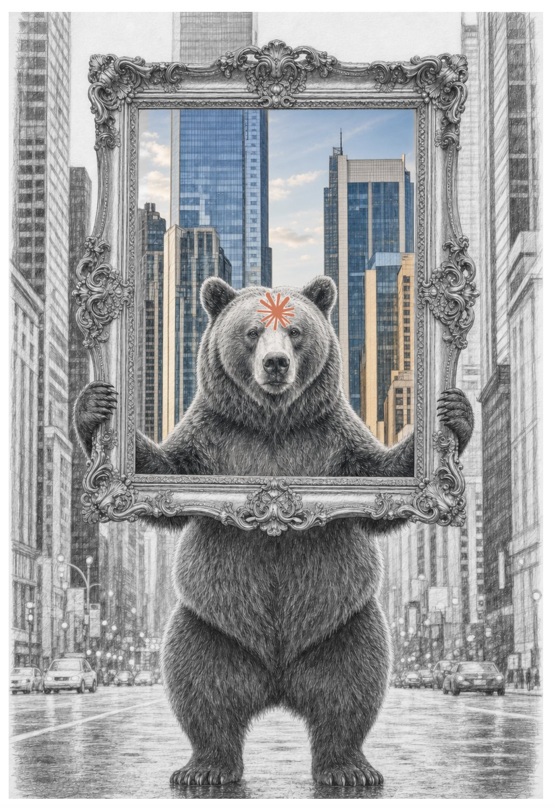

Essay • August 2026
The First Framework That Thinks

Inside the frame, the city is in color. Outside it, everything is pencil.
There is a bear in the middle of a city street holding up a frame. Inside the frame, the city is in color. Outside it, everything is pencil. The bear, for anyone who's been following along, is Claude, and he knows exactly what he's doing. A frame isn't decoration. It's a decision. Whatever is inside it becomes the picture, and everything else becomes background.
I've spent thirty-plus years in workplace technology, which is another way of saying I've spent thirty years watching people build frames for work and then live inside them. This last year the frame changed in a way I don't think we've seen before. I want to walk through what changed in the actual world, in the cognitive one, and in the social one, and then say why I think this is the biggest, baddest paradigm shift I've worked through.
Thirty years of frames
The terminal was a frame. So was the desktop, the intranet homepage, the portal, the dashboard, the SharePoint site, the Slack workspace. Every generation of workplace technology built a new front door and called it a landing zone, and the love for a good landing zone is one of the most persistent things I know about people at work. We want a place to stand.
But look at what those frames actually did. Most were decorative: a logo, a weather widget, a birthday list, twelve links. Most of the rest were fences - a not-so-subtle attempt to keep you inside the sanctioned tools and away from the non-work stuff. Locked-down laptops. Blocked sites. Single sign-on as a moat. I've rolled out a few of those fences myself. They worked, for what they were: containers. The frame decided what was in the picture and, mostly, what wasn't. It never once had an opinion about the picture.
The actual framework: do I even need all my screens?
I'll tell this one on myself, because the record is right there in my own notes.
In March I was building a search index of a year's worth of my own work on a 13-inch laptop on the couch, next to a dog. My husband, who works for a networking company, sat at the desk with three monitors and a video conferencing unit that could run a small embassy. I wanted screens. I inherited his old monitors when he upgraded. I spent an afternoon learning what my laptop would and wouldn't drive. Five months of wanting more glass.
And then, without deciding to, I stopped needing it, because I stopped switching. Screens were never about screens. They were about windows. The work lived in a dozen applications and my eyes were the integration layer - more monitors meant more of the integration could happen at once. If one application holds the connectors, the files, the mail, the calendar, the time tracker, the code, and now the browser - Anthropic put a browser inside Claude Cowork this week, two weeks after it put Cowork inside the Chrome side panel - then the monitors were solving a problem the portal dissolved. The frame shrank back to the size of a lap. The couch turned out to be enough for enterprise work. That's the actual framework: the physical shape of a workday. It just got smaller and quieter.
The cognitive framework: working inside something that remembers
Here's what happens when you run everything through one frame for a year. Three powerful things.
First, you get a track record. Every draft, every analysis, every argument I've had with myself is in one searchable place. I don't reconstruct last quarter. I query it.
Second, you're not alone in the frame. I have a thought partner for what I've started calling, half as a joke, cognitive artifact manufacturing - cognitive artifacts being Don Norman's old term for the things we build to think with, and manufacturing being what it feels like at volume. Decks, documents, spreadsheets, emails, the usual. The partner reads what I read, remembers what I decided, and argues back when I'm wrong. That last part matters more than the first two.
Third, sediment. I keep a tidy little memory overflow for my Claude - a vault and an index that hold everything the built-in memory can't - and the effect is geological. Each artifact settles into the strata and becomes the ground the next one is built on. Nothing I make starts from zero anymore.
I read Kuhn my second year of college, and the takeaway for me was the shape of change: not steady increments but a dam under mounting pressure, invisible for a long time, then sudden AND permanent. He also said something less quoted. Practitioners of the old paradigm and the new one are incommensurable. They can't even agree on what counts as a problem. "Do I need all my screens?" is that kind of question. In the old frame, more screens is always better and the question doesn't parse. In the new one, it answers itself.
Why this one is different
Every paradigm shift I've lived through in workplace technology changed the container. Mainframe to PC changed who owned the computer. Client-server to web changed where the software lived. Cloud and mobile changed where the work could happen. Each one was a bigger, better, differently shaped frame. None of them thought.
This one has intelligence, and I want to be precise about what I mean, because the word gets thrown around. I mean three things:
- The frame reads what's in it. It holds context across weeks, not sessions.
- It can act - open the browser, write the file, run the query.
- And, this is the one that makes it a different kind of object, it can change its own shape at my request. When I need a data source that doesn't have an off-the-shelf connector, I don't file a ticket. I sit with the frame and we build the connector, a small custom MCP server, and from then on the frame reaches somewhere it couldn't reach before.
A container can't extend itself. A colleague can.
That's the whole difference. For thirty years, the frame was a fence. Now it's a participant. The old frameworks guarded me from the non-work stuff. This one helps me do the work stuff, and it gets better at my work while it does, and I get better at the collaboration. The pressure behind this dam built one connector at a time for a year in my own house. The break, for me, was this week, when the browser moved inside.
The societal framework: who gets to be in the picture
Frames also decide who's in the picture. The old ones were built by IT and used by everyone else - builders and users, two castes, a ticket queue between them. That division was never about talent. It was about tooling. The people who understood the work couldn't touch the machinery, and the people who could touch the machinery didn't understand the work.
A frame with intelligence moves that line. I've watched business users at a regulated insurer, opt in, no mandate, become people who build their own skills and tools, because the frame could meet them where they stood. That's the part of this paradigm shift that will matter most, and it won't show up in a benchmark. It shows up as a person in the business who stops filing tickets.
And I'll say the hard part too, because I believe it. A frame that thinks is also the most comfortable isolation technology ever built. If everything you need is inside it, you can go a long time without leaving. The framework has intelligence. It does not have your neighbors. So I take the opposite position on purpose: I teach this at the public library, I'm planning a booth at the farmers' market this fall, I put the tool in ordinary hands in rooms with other people in them. The point of a frame that gives you margin back is to spend the margin on other people. I named my company for the dictionary's third sense of prodigal - yielding abundantly - and that's the whole ambition: a paradigm that yields enough to be generous.
Active or passive: the suit is on the hanger
A framework is something you accept. The only question is whether you accept it actively or passively, and with every previous frame the difference barely mattered. The portal was there whether you clicked its links or not. The dashboard didn't care if you looked. You could take those frames passively and lose nothing.
This one is different. Accept it actively and you get a supersuit: the memory, the connectors, the partner that argues back, the frame that reshapes itself when you ask. Accept it passively - open the app, ask it to fix a paragraph, close it - and you are doing the old work inside the new frame with every enhancement still on the hanger. Same tool, two completely different jobs, and the whole difference is the stance of the person holding it.
The stance leaks past work, which I didn't expect. A year inside a frame that thinks has changed the shape of a problem for me. The first thought used to be "that's outside what I can do." Now it's "that's not outside my limits, it's a question of how I use this to solve it." I learned that posture watching Jensen Huang, and this week Jeetu Patel said it in two words at Cisco's GSX: be unreasonable. Be unreasonable about what you ask of the world. Working inside this frame makes me bold, and bold is not a word I used to reach for.
The sidelines
Here's the caveat, for anyone who decides not to choose. You will watch the people around you jet off to new worlds. They will conquer tasks that used to take a team, they will not run out of new ideas, and you will wonder how your coworkers get all their stuff done and more. You will get tired of standing on the sidelines of that much productivity. It will feel bad. I'm not going to pretend otherwise, because pretending otherwise is how people end up on the sidelines.
It is not a driverless frame
And to those who think this frame doesn't include them, that it's a driverless machine you either own or get replaced by: that is not what's happening. I'm weary of the set-it-and-forget-it crowd on both sides, the ones who fear it and the ones who sell it. The dream is not to get paid to "work" while you toss a frisbee in the park. The frame has a mind. It does not have a driver. The dream is to work in bigger and better ways than you could before, and that requires you in the seat.
Don't wait
To everyone already working this way and waiting for the world to catch up: don't wait. Keep doing. The definitions are going to be questioned for a while - the titles, the job descriptions, the taxonomy that has no name yet for what you actually do all day. That's what a paradigm shift feels like from inside; Kuhn's incommensurability is exactly this, two frames that can't agree on what counts as work. But there's a quiet advantage to doing it inside an intelligent frame: it keeps the record. Your successes, your builds, your innovations are in there, dated and searchable, before anyone has a word for them. When the definitions arrive, the receipts will already exist.
What to put in the picture
The bear is holding the frame up so you can see through it. Everything inside it is in color. Everything outside it is background. That's the job a frame does. The only other color in the drawing is on the forehead of the one holding it, and that's the part that's new. The frame doesn't hold itself. Someone has to pick it up.
For thirty years I built and bought frames that decided what was in the picture and kept me from the rest. This is the first one that helps me decide, remembers what I chose, and can be rebuilt by me when it's wrong. That's not a better dashboard. It's a different kind of thing. The people already working this way know it. The people who aren't will find that the question - do I even need all my screens? - stops parsing sometime next year.
I don't need a bazillion screens, I just need one intelligent frame.
Written inside Claude, naturally.